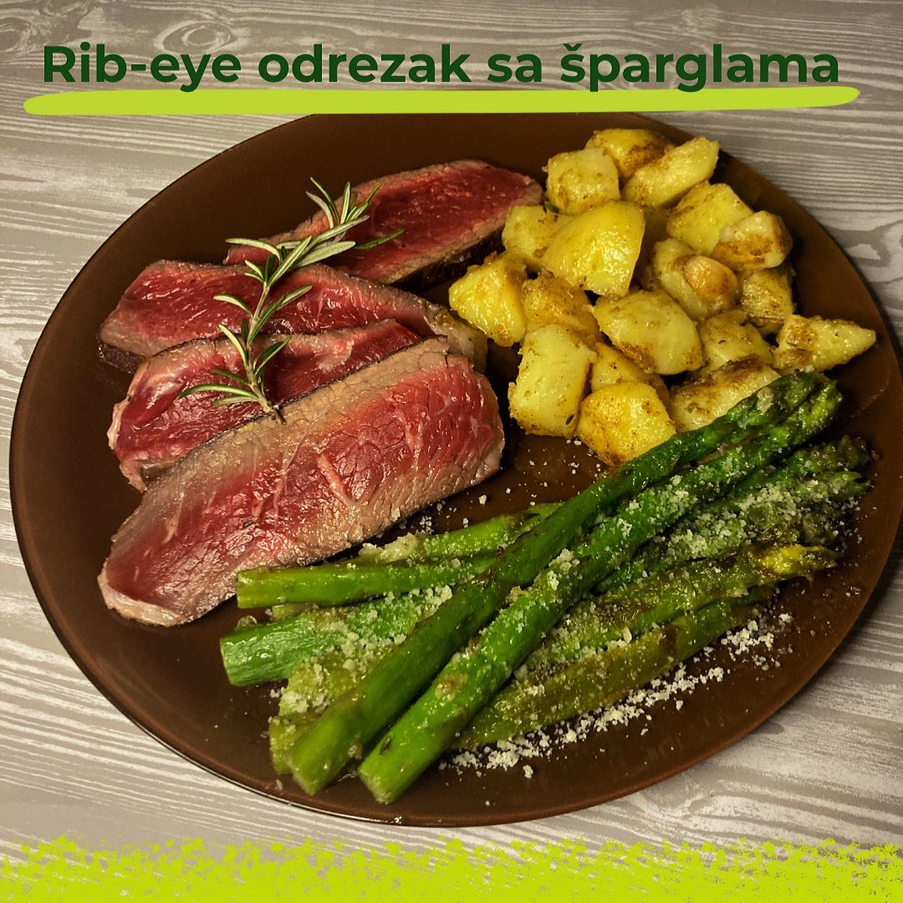

Biftek podľa @klopica.rs — Normy Jedál
Biftek su „izmislili“ Englezi pa će vam samim tim biti jasnija imena ovih specijaliteta: Bif steak, Rib eye steak – T bone steak… 🍽 Amerikanci su tokom razdoblja kaubojske kulture shvatili da su najbolji komadi mesa zapravo uz rebra, posebno na žaru, pa je tako nastao rib eye steak. 🥩Najpopularniji od svih odrezaka kako u svetu, tako i kod nas je definitivno biftek, ali u restoranima sve više možete naći više vrsta odrezaka. 😍
Najcenjeniji komad junetine je svakako biftek. Tu titulu je dobio najviše zbog mekoće i ukusa. 🤤Ali postavlja se pitanje da li je moguće komad junetine učiniti još mekšim i ukusnijim, kako izvuči najbolje od njega?Odležavanje odnosno zrenje ili aging je odgovor na to pitanje. 😎
Ovaj fenomenalni Rib-eye odrezak sa šparglama će vas oboriti s nogu! 🤤 Arome i mirisi će vam se uvući pod kožu, a ukoliko ga spremate za svog parntera, opet će se zaljubiti u vas! 🥰
Naši verni partneri @mesarajokic su nam omogućili da vama obezbedimo ovaj ugođaj! 🤝🍀
Ukoliko još niste, još SAMO danas možete poručiti ovo jelo, jer već sutra stiže novi meni!👩🏽🍳👨🏽🍳
#steak #biftek #spargla #rucak #klopanje #rucak #ukusi #aromaterapija